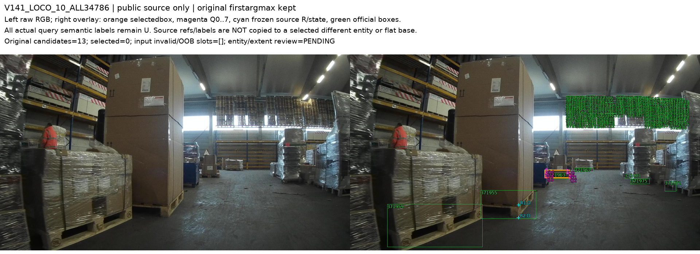
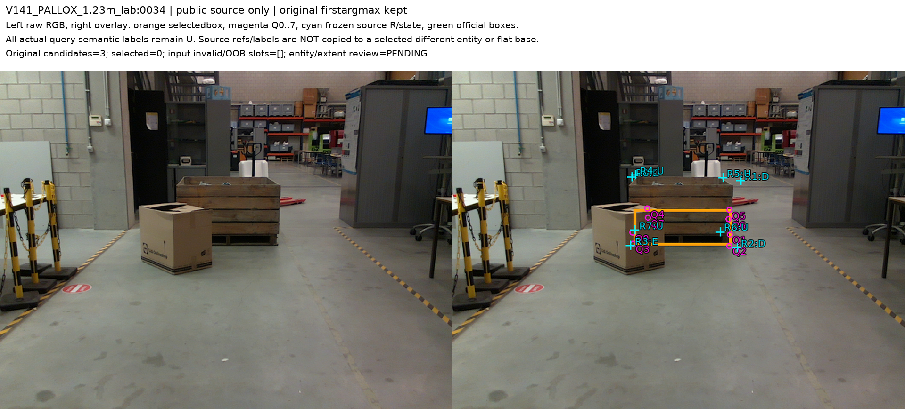
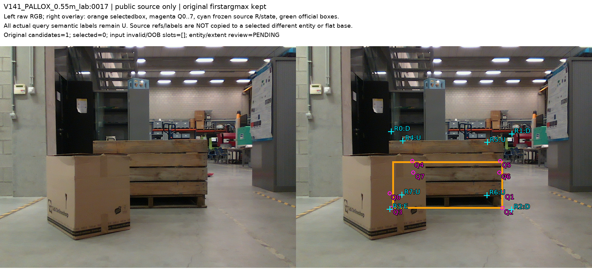
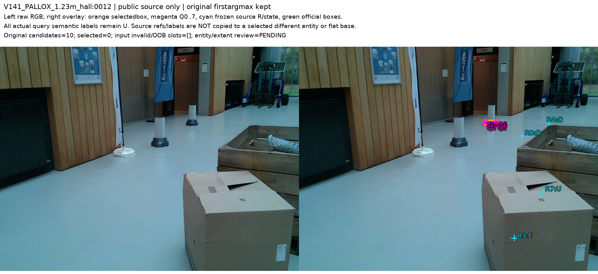
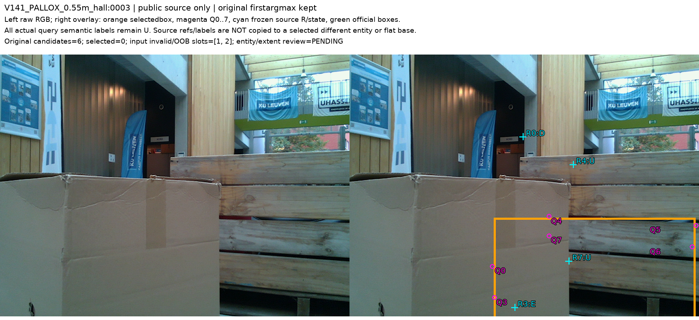

고정 공개 실사16장의 실제 초기 추론128점과 source 주석의 대상을 비교했다. 주석15개를 그대로 학습 라벨로 이전할 수 없으며, 다른 instance와 큰 상자 전체/바닥 부분의 참조 범위 불확실성을 분리했다. 하단4개는 조건부 공통 역할 후보로 남겼다.
16장/128점/120후보: 입력유효107, 미검출8, 유한화면밖13. 새 가림모델 학습·추론·현재223 재평가·PnP는0회입니다.
| 기존 source 제안15개의 상태 | 수 |
|---|---|
| 선택된 instance와 주석대상이 다름 | 5 |
| 큰 상자 상단과 하부 상단의 역할 연결 불확실 | 5 |
| 공통 하단 역할 조건부 후보(LAB) | 4 |
| 큰 좌표차이와 하단역할 불확실(HALL) | 1 |
원 source D/E는 보존했습니다. actual query U128은 주석 연결 미확정이며 모델 보류율이 아닙니다.
LOCO10의 첫 검출은 source2D주석의 앞쪽 팔레트와 다른 뒤쪽 팔레트다. 이것만으로 검출기가 틀렸다고 하지 않는다. 주석 coverage와 선택된 instance가 다른 문제다.
Pallox LAB의 q8과 박스는 상자 하부에 모인다. 큰 상자 윗테두리 native0/1 D를 그대로 주면 하부 상단점의 의미와 섞일 수 있다. 단순 큰좌표오차로 확정하지 않았다.
하단 native2/3은 같은 일체형 base의 바닥 footprint 역할일 가능성이 있다. 큰좌표차이를 이유로 버리지 않고 공통footprint 계약과 등록 불확실성을 확인할 조건부후보로 유지했다.
Hall0012는 상자와 떨어진 작은 영역을 선택했다. 상자의 D/E를 그 query에 이전할 수 없다. Hall0003 하단3은 sourceE를 바꾸지 않고40.9px차이와 역할 불확실성을 분리했다.
정확한 mesh표면에없다는 이유로 visibility를 막지 않았다. 새로운고정GT순열·점이동·검출대상재선택도 하지 않았다.
실제query의 U128은 source 라벨 연결 미확정 상태다. 가림 모델을 실행해서128개 모두 보류한 결과가 아니다.
원래 첫 검출은 뒤쪽 작은 팔레트이며, 주석 제안2개는 앞쪽 큰 상자 아래 팔레트의 점이다. 앞쪽 보임2개를 뒤쪽 native1/2에 복사하지 않는다.

예측 박스와 q8은 상자 하부에 일관되게 모인다. full-crate upperrim과 pallet-base upper 역할 차이인지 큰 위치오차인지는 확정하지 않는다. 큰좌표차이만으로 원래 D/E를 바꾸거나 샘플을 버리지 않는다.

예측 박스와 q8은 상자 하부에 일관되게 모인다. full-crate upperrim과 pallet-base upper 역할 차이인지 큰 위치오차인지는 확정하지 않는다. 큰좌표차이만으로 원래 D/E를 바꾸거나 샘플을 버리지 않는다.

선택된 작은 영역은 큰 목재 상자의 영역에서 떨어진 기둥 받침 주변/바닥 쪽이다. 상자 D/E3개를 현재8점에 복사할 근거가 없다.

예측 박스와 q8은 상자 하부에 일관되게 모인다. full-crate upperrim과 pallet-base upper 역할 차이인지 큰 위치오차인지는 확정하지 않는다. 큰좌표차이만으로 원래 D/E를 바꾸거나 샘플을 버리지 않는다.

원 JPEG SHA/HW는 같았지만 pinned libjpeg-turbo와 원 canonical libjpeg9의 픽셀 값이 달랐다. 원 expected decodedSHA를 바꾸지 않고 canonical RGB16개를 lossless NPY로 전달했다. 원 실패 실행과 모든 원본은 보존했다.
128 q/L/유효9x9mask/120candidate/raw9/firstargmax와8미검출·13OOB를 검산했다. 과거 Pallox2장과 모든 후보·q8/L·affine이 정확히 재현됐다.
source3D mesh 구조만으로 pallet-base/shared-lower-footprint 역할을 명시하고 원래 fullcrate reference와 분리한 뒤, query/라벨 연결을 재검토한다. 투영오차를 줄이도록 3D경계나 pose를 맞추지 않는다. LOCO source 주석은 원래 instance에 보존한다.